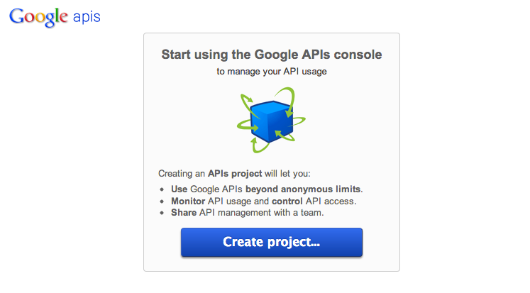

Get the client_secrets.json file if you don’t have it already. Use the fab newproject command to kick off a new project by copying a basic project structure and setting up a Google spreadsheet.
Tarbell uses the Google Drive API to create new spreadsheets, which requires going through a little OAuth2 song-and-dance. This is optional but highly recommended, in part because Tarbell will probably use this technique for all authentication and access in the future. If you want to skip this step and configure your spreadsheet manually, see Manually creating Google spreadsheets.
You ready? Let’s go.
In order to allow Tarbell to create new Google Spreadsheets, you’ll need to download a client_secrets.json file to access the Google Drive API. You can share this file with collaborators and within your organization, but do not share this file anywhere public.
Log in to the Google API Developer Console and create a new project:
Create client screenshot
Now click the “Services” tab and enable Google Drive API.
Enable Drive API
Click the “API Access” tab to create a client ID:
Create client ID
Add some project details. These don’t really matter:
Client ID details screen
This is the important screen. Select “installed app” and “other”:
Create ID important screen
Whew! Now you can download the client_secrets.json file:
Download client_secrets.json
Now put the file in the root directory of your Tarbell installation.
The first time you run fab newproject and answer yes to create a Google spreadsheet, your default browser will open and you will be prompted to grant your Tarbell client access to your API key.
Grant client access
The fab newproject command will prompt you if the client_secrets.json file doesn’t exist.
The first time you create a new project and spreadsheet, make sure you are not running any services on port 8080, such as MAMP. The Python Google API client library fires up a tiny little server on port 8080 to receive and store an access token during this cycle. Because the access token is stored, you won’t need to do again unless your token is revoked. You can restore any port 8080 services indefinitely.
Help us improve! We know this step is a little rocky. We’d like to make it smoother. If you are an OAuth or Google Drive API expert, we need your help. See #21 Improve OAuth workflow for newproject command and #22 Use Drive API in Tarbell library.
Create a project
To create your first project, use the handy fab command:
fab newproject You’ll be prompted with a series of questions. Here’s what you’ll see the first time you it with user input highlighted.
What is the directory name for the project? awesomeproject What is your project’s full title? Awesome project Do you want a Google doc associated with this project? [Y/n]: y Generating Google spreadsheet What Google account should have access to this spreadsheet initially? (e.g. my.name@gmail.com) somebody@gmail.com Authenticating your Google account to use Tarbell. If any services are running on port 8080, disable them and run this command again.
Your browser has been opened to visit:
If your browser is on a different machine then exit and re-run this application with the command-line parameter
–noauth_local_webserver
Authentication successful. Success! View the spreadsheet at https://docs.google.com/spreadsheet/ccc?key=BIGLONGSPREADSHEETKEY90xlk39102k4
This spreadsheet is published in public on the web. To make it private you’ll need to configure the project’s secrets.py file, disable publishing using the ‘Publish to the web’ settings from the file menu, and share the document with the account specified in secrets.py.
Created /Users/davideads/Repos/tarbell/awesomeproject/config.py Created /Users/davideads/Repos/tarbell/awesomeproject/secrets.py Created directory /Users/davideads/Repos/tarbell/awesomeproject/static/css Created /Users/davideads/Repos/tarbell/awesomeproject/static/css/style.css Created directory /Users/davideads/Repos/tarbell/awesomeproject/static/js Created /Users/davideads/Repos/tarbell/awesomeproject/static/js/app.js Created directory /Users/davideads/Repos/tarbell/awesomeproject/templates Created /Users/davideads/Repos/tarbell/awesomeproject/templates/index.html Would you like to create a new branch and initial commit for this project? [Y/n]: y [localhost] local: git checkout master; git checkout -b awesomeproject M fabfile.py M readme/docs/create.md Already on ‘master’ M fabfile.py M readme/docs/create.md Switched to a new branch ‘awesomeproject’ [localhost] local: git add awesomeproject [localhost] local: git commit -m “Started new project awesomeproject” [awesomeproject cc2502a] Started new project awesomeproject
5 files changed, 212 insertions(+), 0 deletions(-) create mode 100644 awesomeproject/config.py create mode 100644 awesomeproject/secrets.py create mode 100644 awesomeproject/static/css/style.css create mode 100644 awesomeproject/static/js/app.js create mode 100644 awesomeproject/templates/index.html
Welcome to Awesome project. Great work! What’s next?
Run fab deploy and fab project:projectname deploy to deploy to S3 if you have a bucket configured.
Done.
To manually set up a Google spreadsheet for your project:
Create a new Google spreadsheet Rename “Sheet1” to “values” Add ‘key’ and ‘value’ column headers in the first row Add the spreadsheet key in projectname/config.py Public access: Set the spreadsheet to ‘publish to the web’ Private access: Grant access to a special user account (you’ll be storing password in the clear, so set up a new account for this) Add credentials to projectname/secrets.py